John's Artificial Intelligence: ML Certificates
- Fundamentals
- Large Language Models (LLMs)
- Algorithms
- Data Engineering
- MLOps
- Architecture
- Programming
Fundamentals (4)
Machine Learning Foundations for Product Managers from Duke University by Jon Reifschneider
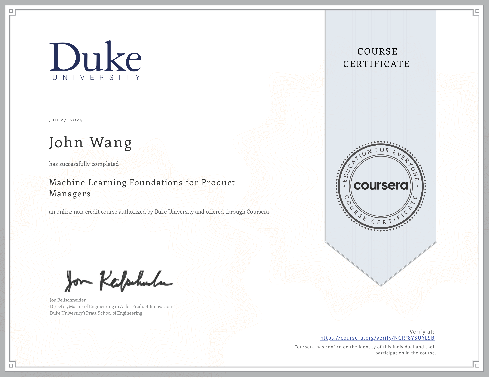
Vector Search and Embeddings from Google Cloud
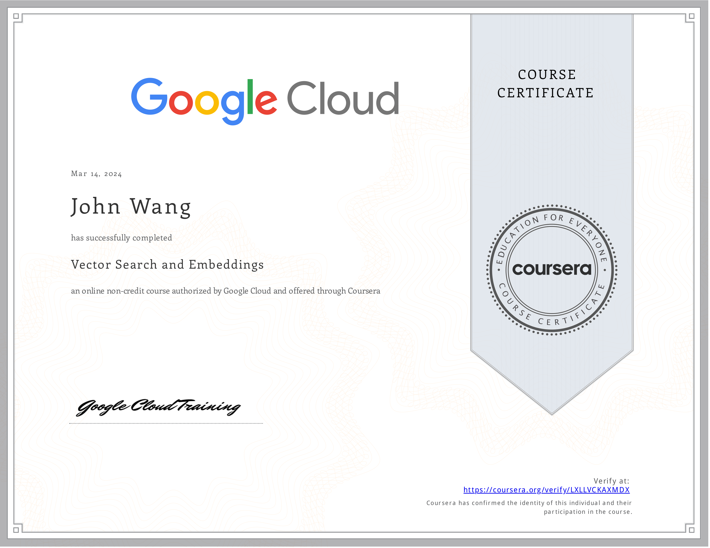
Intro to Hugging Face from Codecademy
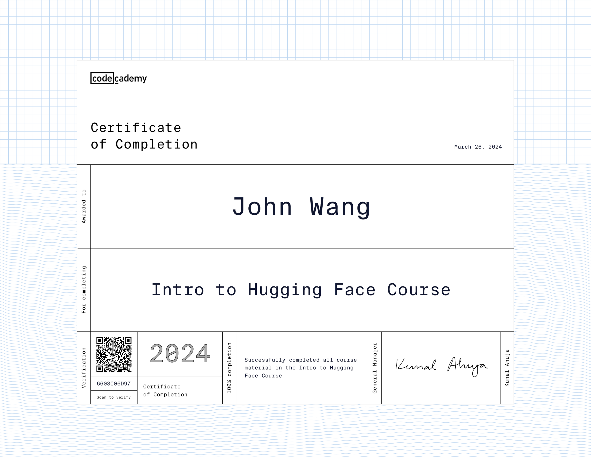
Jupyter Notebook from Great Learning Academy by Anirudh Rao

Large Language Models (LLMs) (4)
Fundamentals of LLMs from Hugging Face
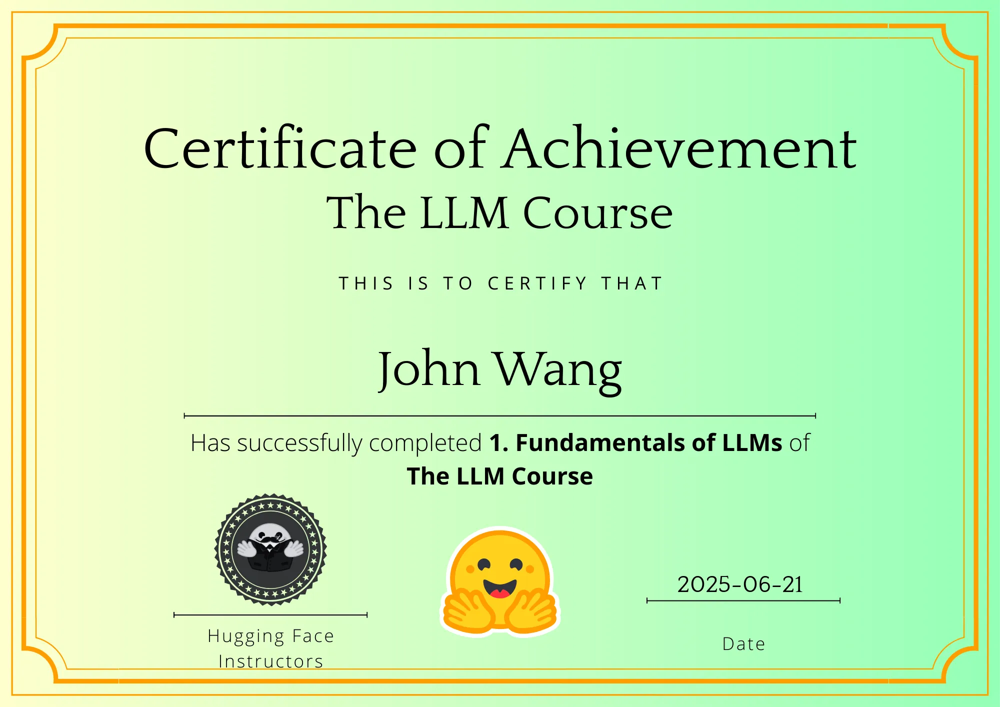
Introduction to Large Language Models from Google Cloud

Attention Mechanism from Google Cloud
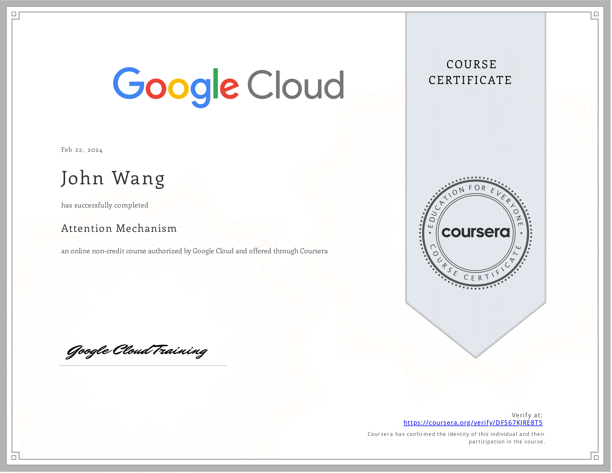
Domain-specific LLM Agents from Pluralsight by Brian Letort
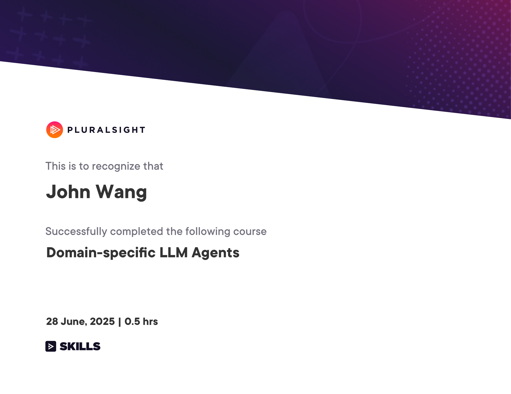
Algorithms (1)
KNN Algorithm from Great Learning Academy by Anirudh Rao, Bharani Akella
Data Engineering (1)
Get Started with Databricks for Data Engineering from Databricks
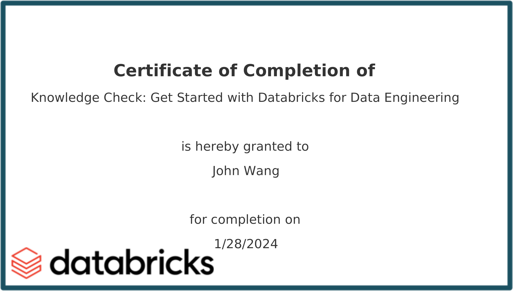
MLOps (2)
Introduction to Machine Learning in Production from DeepLearning.AI by Andrew Ng
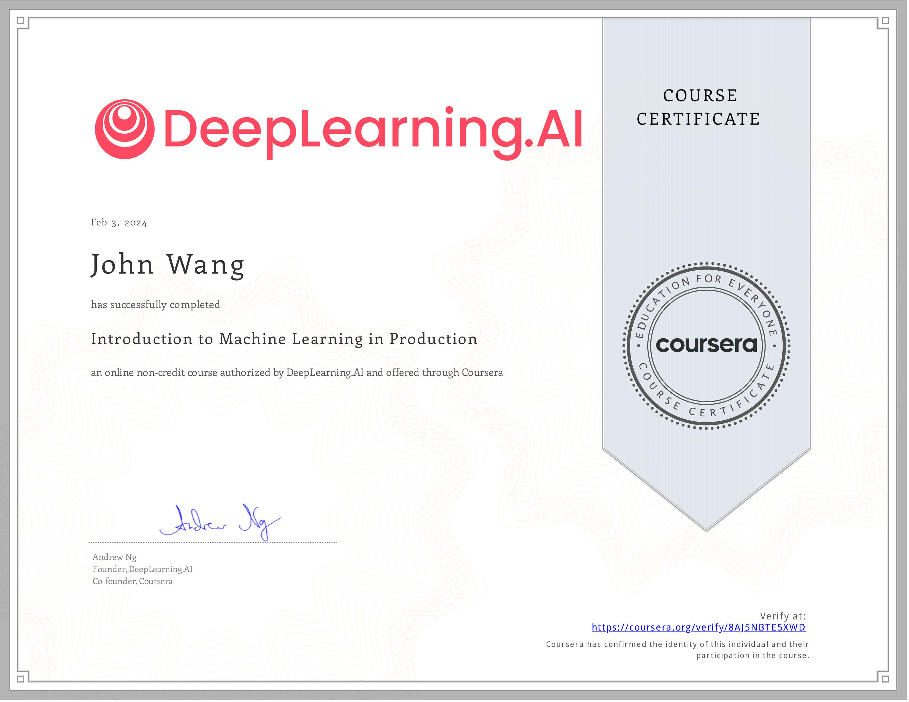
AWS SageMaker from Great Learning Academy by Vishal Padghan
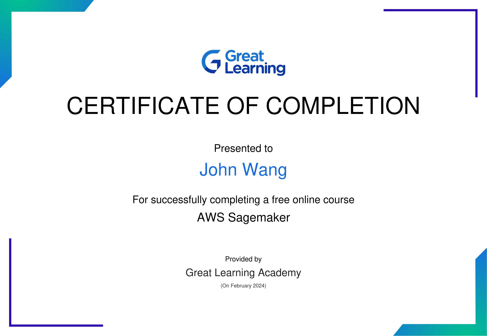
Architecture (2)
Structuring Machine Learning Projects from DeepLearning.AI by Andrew Ng
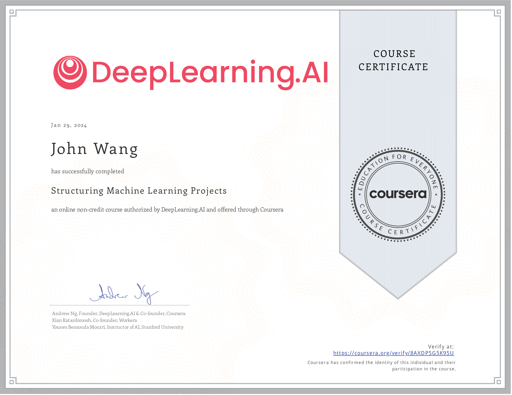
Databricks Accredited Lakehouse Fundamentals from Databricks
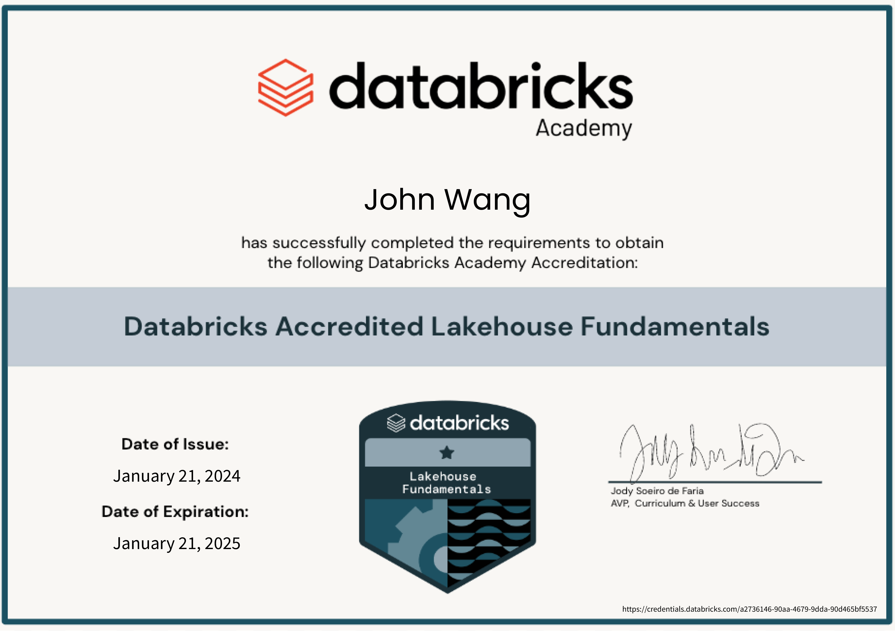
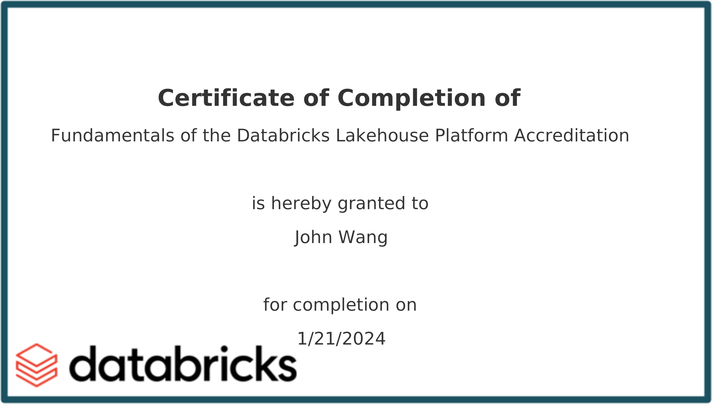
Programming (1)
Machine Learning from Stanford by Andrew Ng